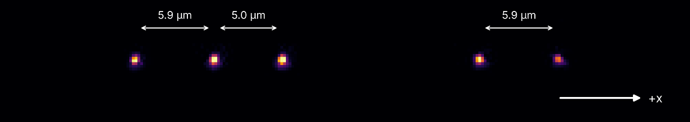

Abstract
- 1Department of Quantum Information Engineering, Sungkyunkwan University, Suwon, Gyeonggi, Republic of Korea
- 2SKKU Advanced Institute of Nanotechnology (SAINT), Sungkyunkwan University, Suwon, Gyeonggi, Republic of Korea
Trapped ions are a leading platform for quantum computing, with each ion storing a qubit in two internal states. The qubit state is measured by state-dependent fluorescence: under resonant laser light, an ion in one state scatters many photons (bright), while an ion in the other scatters almost none (dark). Detecting the state of each ion individually in a multi-ion chain requires high collection efficiency and low crosstalk between neighboring ions. In a cryogenic trap, this must be achieved through a vacuum window, from a long working distance, and despite thermal contraction on cooling. We develop individual state detection for 171Yb+ ions in a 4 K trap by combining a cryo-compatible objective lens with sCMOS camera readout. The single aspheric objective (NA 0.6, 10 mm working distance) confines 90% of an ion’s light within a 2.2 µm square with ~0.1% crosstalk at 5 µm spacing, and gives a single-ion SPAM error of 0.73% with PMT detection. The sCMOS camera is integrated into the experimental control system to read out each ion’s state. Because camera pixel noise dominates, we characterize the counts and the sCMOS SPAM error versus the size of the region of interest (ROI), where a larger ROI gathers more light but adds more pixel noise.
